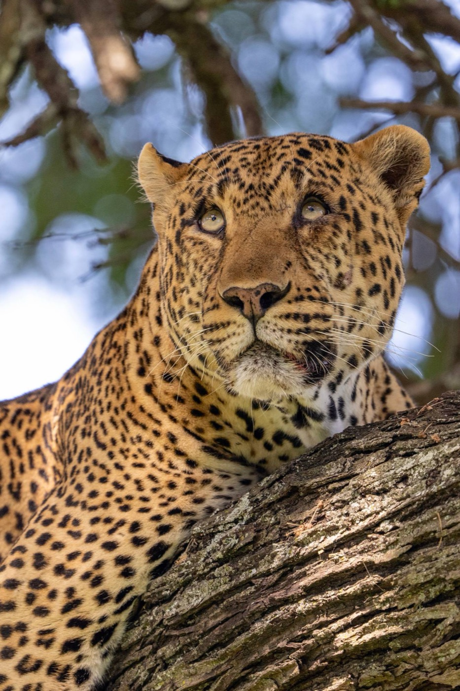
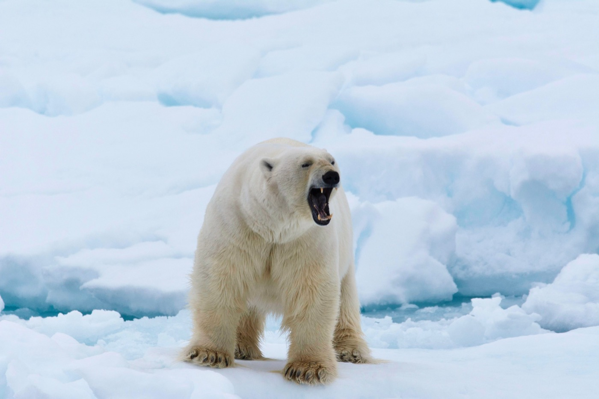
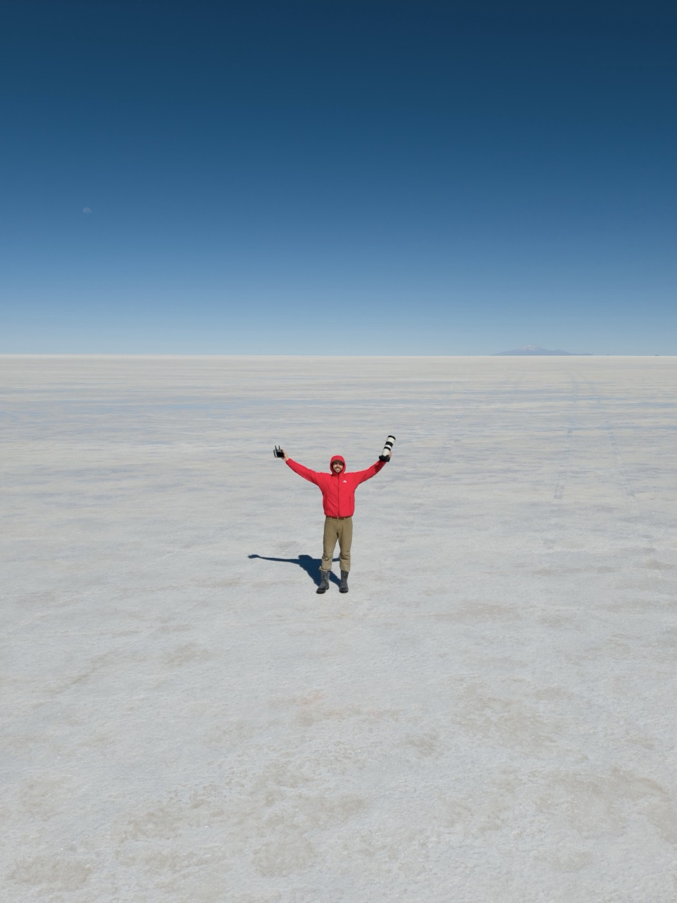
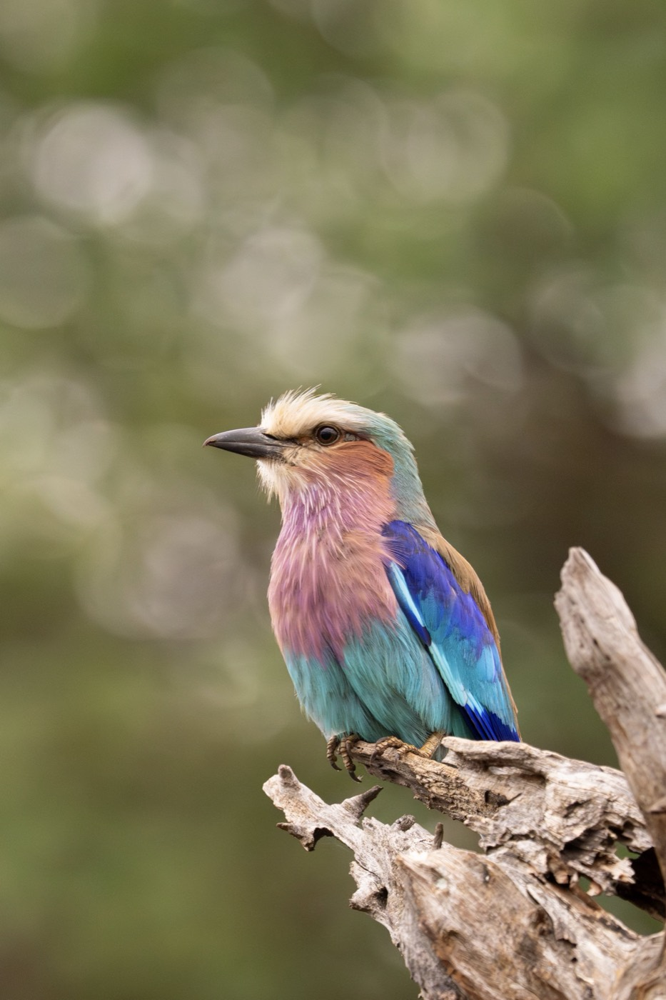
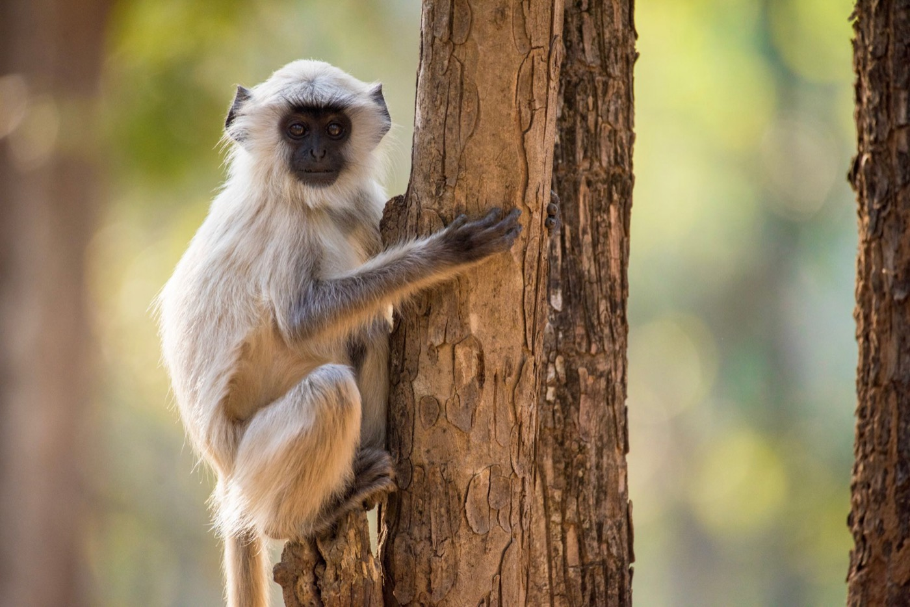
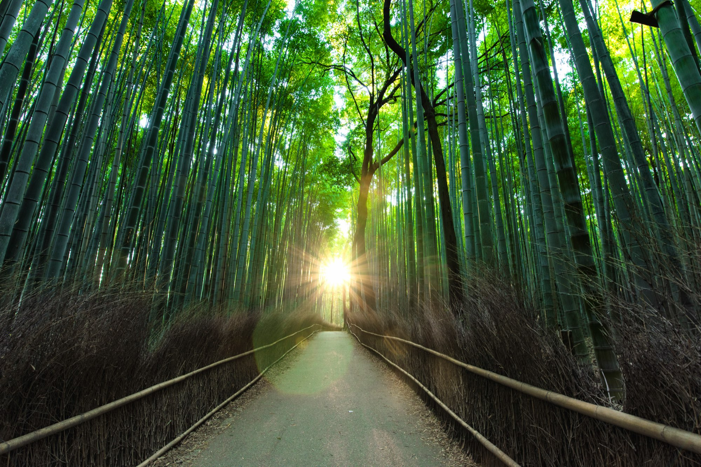

A new wildlife nonprofit
Follow
Follow
the Wild.
Wildlife stories that get people outside, doing real science, and protecting the places they love.
Our belief
People protect what they feel connected to.
Follow the Wild inspires people to fall in love with the wild, then turns that connection into exploration, discovery and real conservation. Our core films, lessons and challenges are free, so every kid and every classroom can take part.
About us → InspireStories that make you care
4 programs →
InspireStories that make you care
4 programs →
 ExploreGet outside and see it yourself
4 programs →
ExploreGet outside and see it yourself
4 programs →
 DiscoverDo real science, back new explorers
3 programs →
DiscoverDo real science, back new explorers
3 programs →
 ProtectTurn care into action for wildlife
3 programs →
ProtectTurn care into action for wildlife
3 programs →
Launching first
Our first year
We're launching with five flagship programs across all four pillars, each built to show measurable impact from day one.
4pillars
15programs
5launching in year one

Inspire
Inspire
Explore
Discover
ProtectFrom the field
Wild moments

Be there from the start
Join the trail
Get our first free lessons, challenges and ways to help, as soon as they're ready.
Sign up